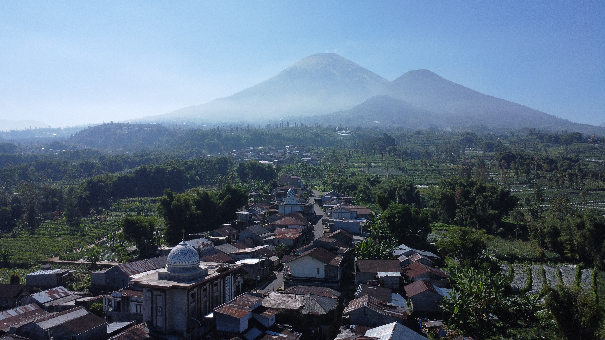
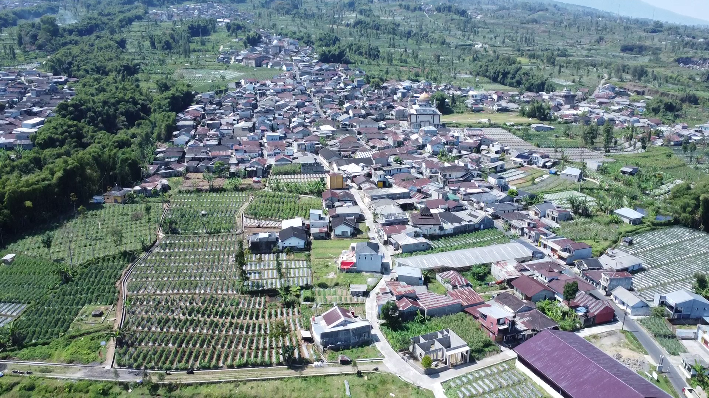
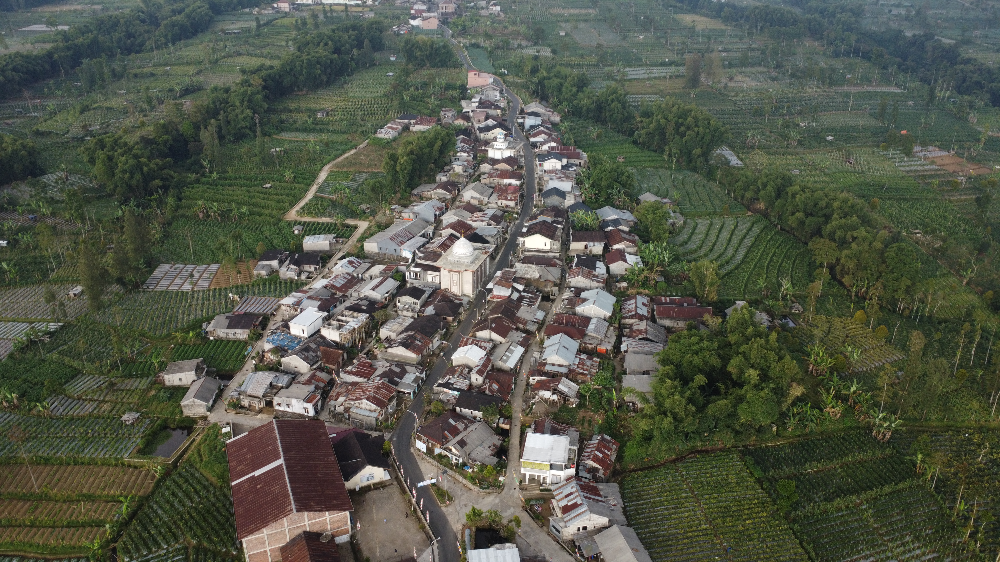
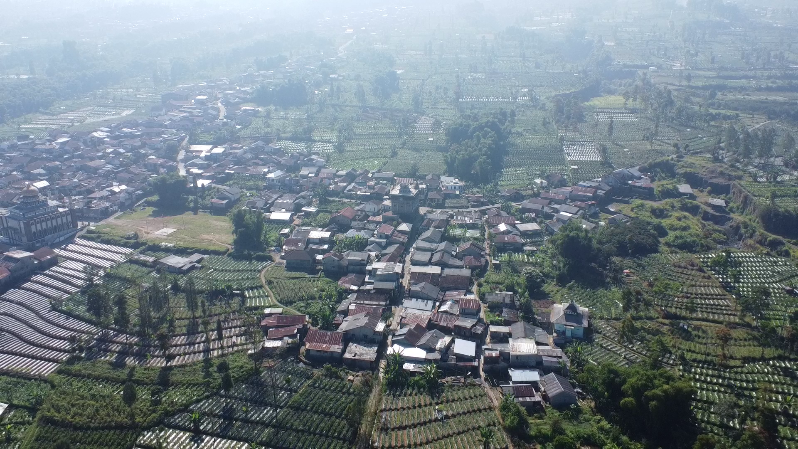
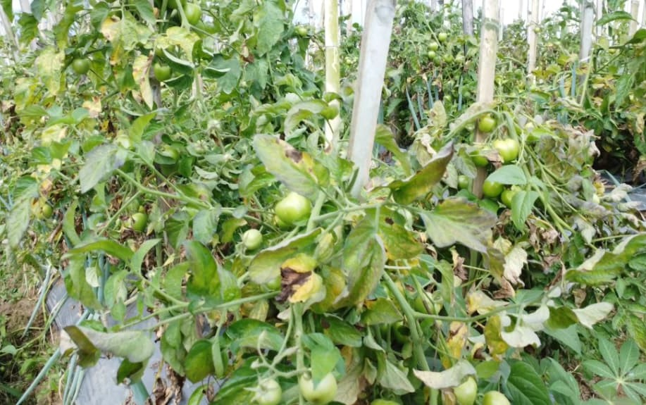
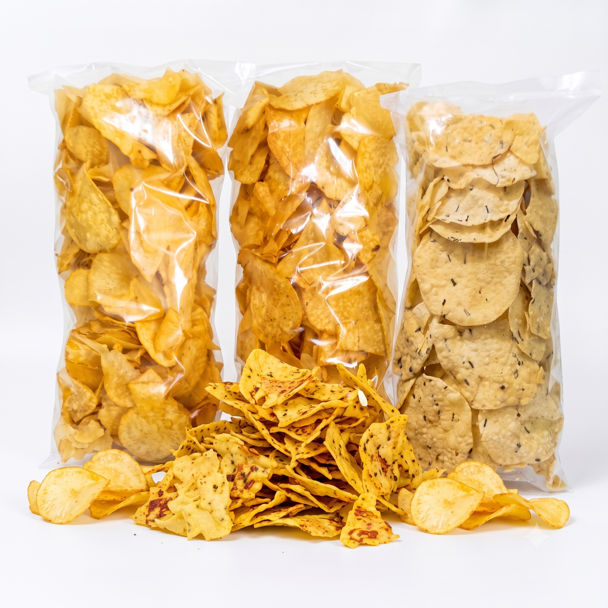
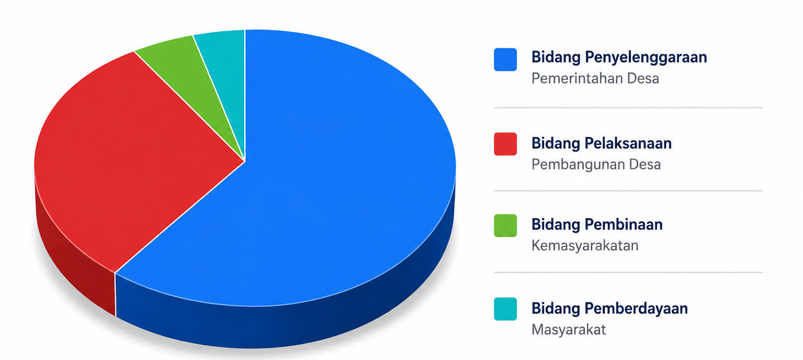

Pencarian Populer
Website resmi Pemerintahan Desa. Wujud transparansi informasi, kemudahan layanan administrasi digital, dan promosi potensi wilayah yang unggul.


Desa Gemblengan memiliki bentang alam pegunungan yang subur dan sejuk. Sebagian besar penduduknya menggantungkan hidup pada sektor agraris dan terus berkembang dalam mengelola potensi sumber daya alam maupun manusianya.
Terletak di kawasan strategis lereng pegunungan dengan topografi yang mendukung sektor pertanian, perkebunan, dan sumber air yang melimpah.
Dihuni oleh masyarakat guyub rukun dengan pertumbuhan penduduk yang stabil. Mayoritas warga berprofesi sebagai petani, peternak, dan penggiat UMKM.
Memiliki iklim tropis sejuk. Sebagian besar lahan digunakan untuk area persawahan, perkebunan sayur organik, dan pemukiman yang asri.
Desa Gemblengan terdiri dari 5 wilayah dusun yang masing-masing memiliki karakteristik bentang alam, kearifan lokal, dan potensi unggulan yang unik. Klik kartu dusun di bawah ini untuk melihat detail selengkapnya.


Kami mengintegrasikan teknologi pemetaan spasial (WebGIS) untuk memetakan batas administrasi, sebaran infrastruktur, tata guna lahan, hingga potensi UMKM dan pertanian desa secara akurat.


Perjalanan panjang terbentuknya peradaban Desa Gemblengan dari masa ke masa[cite: 4].
Sejarah bermula saat datangnya seorang tokoh yang diyakini sebagai prajurit Pangeran Diponegoro[cite: 3]. Beliau menanamkan jiwa patriotisme, kewirausahaan, serta ajaran Islam pada penduduk asli di lereng Gunung Sindoro[cite: 3].
Sejarah bermula saat datangnya seorang tokoh yang diyakini sebagai prajurit Pangeran Diponegoro[cite: 4]. Beliau menanamkan jiwa patriotisme, kewirausahaan, serta ajaran Islam pada penduduk asli di lereng Gunung Sindoro[cite: 4].
Desa ini berkembang menjadi pusat peradaban dan seni, dibuktikan dengan majunya pendidikan Islam, penduduk yang menunaikan ibadah haji, serta interaksi niaga dengan etnis Tionghoa[cite: 3].
Desa ini berkembang menjadi pusat peradaban dan seni, dibuktikan dengan majunya pendidikan Islam, penduduk yang menunaikan ibadah haji, serta interaksi niaga dengan etnis Tionghoa[cite: 4].
Pada masa kepemimpinan KH. Abdurrahman, dibangunlah Masjid Baiturrahman di Dusun Gemblengan yang merupakan masjid pertama di daerah tersebut dan sekitarnya[cite: 3].
Pada masa kepemimpinan KH. Abdurrahman, dibangunlah Masjid Baiturrahman di Dusun Gemblengan yang merupakan masjid pertama di daerah tersebut dan sekitarnya[cite: 4].
Sistem kepemimpinan setingkat Demang beralih menjadi sistem demokratis melalui pemilihan (Glondong)[cite: 3]. Hal ini memicu berbagai pembangunan fasilitas umum dan Sekolah Dasar[cite: 3].
Sistem kepemimpinan setingkat Demang beralih menjadi sistem demokratis melalui pemilihan (Glondong)[cite: 4]. Hal ini memicu berbagai pembangunan fasilitas umum dan Sekolah Dasar[cite: 4].
Wujud komitmen pemerintahan desa dalam mewujudkan tata kelola keuangan yang transparan, akuntabel, dan berpihak pada masyarakat.

Sampaikan aspirasi, aduan masyarakat, atau pertanyaan melalui form di bawah atau datang langsung ke Balai Desa.
Kantor kami siap melayani Anda pada jam kerja.